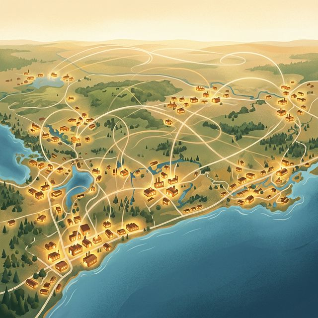

What the Manufacturing Series Has Already Shown
The four scenario articles in the manufacturing series describe four separate thin market failures in the Canadian SMB manufacturing context:
-
Fractional Testing (BC interior) — A certified tensile testing machine sits idle at a community college while a fabrication shop hours away ships weld coupons to Vancouver and waits three weeks. Neither side can find the other.
-
Idle Machinery (Ontario) — A surplus CNC machining centre in Stratford, covered under a tarp, cannot be found by a buyer in Querétaro because the seller doesn’t know how to market a machine internationally and the buyer doesn’t know this one exists.
-
Fractional Capacity (Hamilton–Kitchener corridor) — A precision machining shop carries two idle five-axis machines at $14,500/month each while a robotics integrator sixty kilometres away struggles to source five-axis titanium machining for a six-week contract. Both sides are deliberately hiding.
-
Fractional Skills (Quebec) — A production supervisor with GICSP cybersecurity certification sits in Sherbrooke while a manufacturer in Trois-Rivières pays $25,000 to a consulting firm that has never seen a Fanuc controller.
Each of these is treated as an isolated matching problem — a thin market with opacity, trust, and discovery barriers that the platform can reduce. That is the right framing for each individual case. But step back across all four scenarios together and something larger comes into view.
These are not four separate problems. They are four instances of the same structural condition: a manufacturing base composed of highly competent, deeply experienced, but entirely uncoordinated micro and small enterprises, each operating as a self-contained silo, each carrying surplus capacity in some dimension that another firm desperately needs.
This is, structurally, the Italian industrial district — minus the coordinating infrastructure.
What Ontario Manufacturing Actually Looks Like
Ontario hosts the largest manufacturing base in Canada. The numbers are dominated by SMBs: over 80% of Ontario manufacturers have fewer than 100 employees, and a substantial proportion have fewer than 20. These are not primitive operations. Ontario’s manufacturing SMBs include:
- Precision CNC machining shops holding aerospace certifications (AS9100D, NADCAP) producing to tolerances of ±0.005mm
- Specialty metal fabricators certified to pressure vessel codes (ASME Section VIII) and structural welding standards (CSA W59)
- Contract manufacturers with deep expertise in exotic materials — titanium, Inconel, tool steels, advanced composites
- Plastics processors with custom tooling capability and multi-material insert moulding experience
- Specialty finishing operations — precision plating, industrial coating, heat treat, EDM
Many of these companies are multi-generational. A second- or third-generation owner in a niche machining operation has accumulated craft knowledge that took decades to develop. Their workholding and fixturing, their material intuition, their process knowledge for particular families of parts — this is genuinely world-class capability.
This is, in miniature, the same profile as the Como artisan firms or the Tsubame-Sanjo metalworkers: deep specialization, multi-generational craft, geographically concentrated (the Hamilton–Kitchener–Cambridge–Guelph corridor, the Barrie–Orillia zone, the Windsor–Chatham automotive belt), and almost entirely disconnected from each other.
What they lack — what the Italian districts built over seventy years of organic social evolution and the Tsubame-Sanjo cluster reinforced through trade associations and collective institutions — is the coordinating infrastructure that turns a collection of isolated specialists into a functional ecosystem.
The MarketForge Broker Function Applied to This Context
The Italian impannatore provided three things the artisan micro-firms could not provide for themselves:
- Discovery — They knew the full map of the district and could identify which firm was best suited for which operation.
- Demand aggregation — They held the client relationship and assembled enough combined volume to justify the specialized firms operating at high utilization.
- Trust intermediation — They guaranteed quality and outcome to the buyer, and flow of work to the sellers, creating a bilateral trust relationship neither side could establish directly at scale.
In the Italian context, this function was expensive: the impannatore captured it as information rent, extracting disproportionate margins because no alternative coordination mechanism existed. The artisan firms had no transparency into final pricing or demand conditions. The broker monopolized the information asymmetry.
MarketForge, in the Ontario manufacturing context, could provide all three functions — at dramatically lower cost and with structural transparency built in from the start.
-
Discovery is the explicit purpose of the matching engine: identifying that Hamilton AS9100D five-axis machining capability matches the Kitchener robotics integrator’s titanium tooling requirement; identifying that the Sherbrooke GICSP-certified production supervisor matches the Trois-Rivières cybersecurity gap.
-
Demand aggregation is the aggregate effect described at the end of each scenario: fifteen fabrication shops, each generating two or three testing orders per year, collectively generating enough volume to justify a dedicated lab day per week — making the market thick enough to sustain both sides at viable economics.
-
Trust intermediation is the confidentiality architecture and the institutional umbrella (CME, ITA, a manufacturing coalition) that provides the liability coverage, the contract templates, and the reputation tracking that allows two strangers to do business.
The Pocket Specialization Hypothesis
The Italian model worked at the cluster level because it was geographically dense, historically accumulated, and product-specific: Como made silk; Biella made wool; Prato made carded fabric. The coordination made sense because the artisan firms were doing compatible things within a coherent supply chain.
The same logic applies to the Ontario manufacturing context — but the relevant unit of organization is not “all Ontario manufacturing” (too large and heterogeneous) and not “one firm’s supply chain” (too small). It is a pocket of compatible specialists in a defined geography.
Consider what could be built around a specific compatibility cluster in Ontario:
Example: The Aerospace Precision Machining Pocket — Hamilton to Cambridge
Within a roughly 80-kilometre arc from Hamilton through Burlington, Oakville, Mississauga, Brampton, Cambridge, and Kitchener, there are dozens of SMBs holding aerospace certifications (AS9100D, NADCAP, Primes’ vendor approval lists) with the following rough specializations:
- Turning specialists — CNC turning shops deep in titanium and Inconel with live tooling capability and Swiss-type turning for small complex parts
- Five-axis milling specialists — shops holding large aerospace structural machining capability (Makino, DMG Mori, Hermle)
- Specialty finishing — hard anodizing, chemical film, precision plating certified to AMS specifications
- NDT and inspection — certified inspection services (CMM, X-ray, FPI, MPI) that aerospace firms require post-machining
- Assembly and kitting — firms that can assemble sub-components from multiple machined parts into a deliverable kit
Today, each of these firms operates independently. A turning house jobs out its milling to a shop in Brampton through a personal relationship its owner has maintained for fifteen years. The milling shop uses an NDT lab it found through its customer’s approved vendor list. No one knows the full map. No one has visibility into aggregate capacity. If the turning house loses its milling contact — retirement, capacity shift — it rebuilds the relationship from scratch through word of mouth.
A MarketForge-mediated coordination layer across this pocket would not need to create the specialization. It already exists. It would need to:
- Map the capability inventory — who does what, at what tolerance, with what certifications, at what utilization
- Aggregate demand signals — what work is being searched for within the pocket, by firms inside and outside it
- Match and route — connect the turning house with available milling capacity at the moment of need, without requiring the turning house to maintain a rolodex of fifteen relationships at varying freshness
- Build reputation longitudinally — track completed engagements so that the firms that perform well rise in match priority, creating the quality signal the impannatore historically provided through personal knowledge
This does not require building a new industry. It requires instrumenting an industry that already exists.
What Changes When the Cluster Coordinates
The Italian case demonstrated that coordination, when it works, changes the competitive position of the individual firms in the cluster — not just incrementally but categorically.
A standalone Hamilton five-axis machining shop competing for aerospace work competes as a generalist contract manufacturer of modest size: capable, but invisible to a Tier 1 buyer in Montreal who is sourcing a complex multi-process assembly. That buyer needs turning, milling, finishing, and NDT. The Hamilton shop can do one of those four. The buyer will find a large integrator in Montreal who can do all four — at higher cost, with generic capability, but with the operational convenience of a single supplier.
A Hamilton five-axis shop that operates within a coordinated pocket is a different offer. It can credibly say: my specialty is five-axis aerospace milling, and I can route the balance of your assembly to certified partners in my network — turning to the Cambridge specialist, anodizing to the Burlington certified shop, NDT to the approved lab in Oakville. The coordinated pocket can take the full order and distribute it by specialization, producing a result that the Montreal integrator cannot match on quality while competing on total-package price.
This is exactly what the Como impannatore did for haute couture designers: delivered a world-class integrated result by assembling best-in-class specialized capacity. The difference is that in the Italian model, the impannatore captured all the coordination margin. In the MarketForge model, the coordination margin is split transparently between the participating firms, with the platform taking a transaction fee that is a fraction of what the human broker extracted.
The Conditions for This to Work
The Italian case also demonstrates what makes the difference between a cluster that coordinates well and one that stagnates or becomes predatory. For an Ontario manufacturing pocket to develop genuine flexible specialization:
The compatibility must be real. Firms in the pocket need to be doing things that genuinely complement each other — adjacent process steps, compatible quality systems, shared customer categories. A precision machining pocket works. A pocket combining precision machining, restaurant supply, and graphic design does not.
The sponsoring institution needs legitimacy. The Italian districts were held together by trade associations with genuine authority, shared financing institutions, and technical schools that provided common training. In the Ontario context, this sponsor role could be filled by CME (Canadian Manufacturers & Exporters), the Ontario Centre of Innovation, a sector-specific trade association (Aerospace Industries Association of Canada, for the aerospace example), or a combination. The platform needs an institutional anchor to provide the umbrella insurance, the contract templates, and the initial demand aggregation that cold-starts the network.
Confidentiality must be structurally guaranteed. The capacity exchange scenario demonstrated that strategic information withholding is the dominant barrier in manufacturing firm-to-firm coordination. The platform’s confidential matching architecture is not an optional feature in this context — it is the prerequisite for participation by firms who correctly assess that public disclosure of surplus capacity carries competitive costs.
Quality reputation must accumulate on the platform, not in personal relationships. The impannatore’s knowledge of “which firm is currently doing the best work” was their core asset — and it was private, non-transferable, and therefore leveraged as rent. The platform makes this reputation public (within the network), transferable (new buyers can access the history of past engagements without needing a personal relationship with the broker), and therefore non-monopolizable.
A Canadian Proof of Concept: Magna International
Before treating the flexible specialization model as a foreign import from Italian economic sociology, it is worth noting that Canada produced one of the most significant independent empirical validations of the same thesis — in automotive manufacturing, in Ontario.
Magna International grew from a single small tool-and-die shop in Aurora, Ontario (founded 1957) into a global Tier-1 automotive supplier with 342 manufacturing facilities worldwide. The organizational philosophy that drove this ascent is the small-plant specialization model the Italian industrial district literature describes: no plant should grow beyond a human scale (roughly 200 employees in practice), each plant specializes in a narrow product family, and plant managers operate with genuine entrepreneurial authority over their facility.
To hold the network together and solve the equity problem that corrupts broker-mediated clusters, Magna embedded its operating principles in a Corporate Constitution (adopted 1984) that predetermines how profits are shared across employees, management, and shareholders — before any specific business negotiation occurs. The OEM relationship (GM, Ford, Chrysler) is held at the Magna corporate level; individual plants focus entirely on manufacturing excellence within their specialty. Corporate acts as the impannatore, routing programs to the right plants — but because it owns the plants, information asymmetry cannot be weaponized as rent.
The model validated the thesis over six decades: small, specialized, profit-sharing plants consistently outperformed large generalist plants on quality and responsiveness in a brutally competitive sector. (For a detailed examination of how Magna’s operational mechanics work and what they imply for thin market design, see the companion piece: Magna’s Small-Plant Model — An Industrial District Built on Purpose.)
The critical divergence from the MarketForge hypothesis is structural: Magna’s solution required ownership. The small-plant benefits are achievable within Magna’s corporate envelope because the plants are subsidiaries, not independent companies. A Hamilton machining shop cannot join the Magna network without being acquired. The question MarketForge is exploring is whether market-mediated coordination with institutional trust structures — confidential matching, reputation systems, contract templates, umbrella insurance — can deliver equivalent functional outcomes for firms that will never be acquired by anyone. Magna proved the destination is real. Whether an independent SMB network can reach it through coordination rather than consolidation is the open empirical question.
A Tractable First Step
The ambition of the full Ontario manufacturing coordination vision is large. But the tractable first version is small and specific:
Identify one compatibility pocket — say, the aerospace precision machining cluster in the Hamilton–Cambridge arc. Recruit the sponsoring institution (AIAC or CME Ontario chapter). Build the capability inventory for 40–60 firms. Instrument the demand signal by systematically capturing what work those 40–60 firms turn down, outsource, or struggle to source. Run the matching engine against real requests for six months. Measure the delta between what got matched through the platform and what would have been resolved (or not) through the existing word-of-mouth network.
That is enough to demonstrate whether the flexible specialization model, mediated through MarketForge, actually thickens the market for these firms — or whether the barriers (confidentiality concerns, institutional inertia, platform cold-start) prove harder to move than the theory suggests.
The Italian model is the existence proof that the destination is real. It does not tell us whether this particular path can get there. That is the empirical question the first pilot would answer.